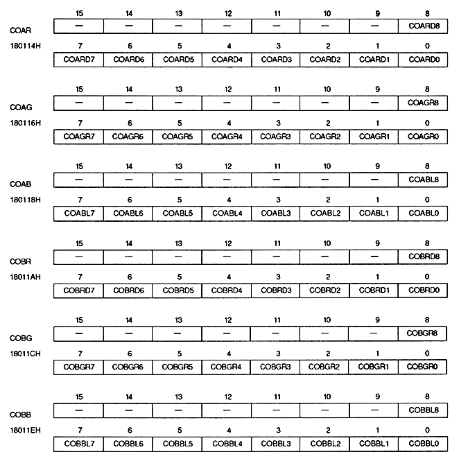

Color offset register specifies each RGB color offset value. This is a write-only 16-bit register located at addresses 180114H to 18011EH. The value is cleared to 0 after power-on or reset, so be sure to set it.

Color offset value bit : Color offset data bit
(COARD8 to COARD0, COAGR8 to COAGR0, COABL8 to COABL0, COBRD8 to COBRD0, COBGR8 to COBGR0, COBBL8 to COBBL0)
∙ Set each RGB value of color offset A and color offset B. Set negative numbers in 2's complement.